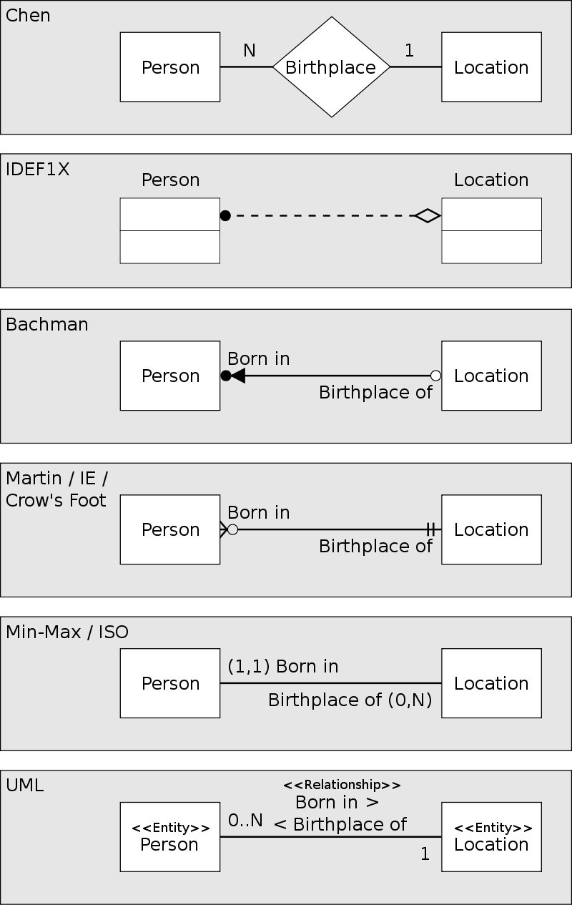

## MySql - Part 2</br> #### Key topics for tonight <div style="text-align: left;"> - Database Relationship Diagrams </br> - More Relational Database Concepts </div> --- ## Database Relationship Diagrams #### Entity-Relationship Modeling - A type of diagram which helps developers understand the relationships between structured data (entities). - Visualizing our data is one of the most effective tools we have in assisting us to make good decisions around how we choose to structure our data! --- ## Database Relationship Diagrams #### Vocab - <span style="color: cadetblue">Entity</span> - A singular cohesive grouping of data that represents the defining traits of one concept or idea. - Note - Entity best practices have a ton of overlap with c# class best practices! Stick to grouping related ideas, and if it's separate, it should be it's own entity. - <span style="color: cadetblue">Cardinality</span> - The possible number of occurrences of one entity in relation to another. - Example: Zero-to-One, Zero-to-Many, One-to-Many, Many-to-Many [ERD Notations Guide](https://www.visual-paradigm.com/guide/data-modeling/what-is-entity-relationship-diagram/#erd-notations-guide) --- ## Database Relationship Diagrams #### Entities --- ## Database Relationship Diagrams #### Cardinality <img style="width: 62%;" src="images/15-mysql-part-2/cardinality.png" /> --- ## Database Relationship Diagrams #### Alternative Cardinality patterns  --- ## Database Relationship Diagrams <span style="color: cadetblue">Demo</span> --- ## Relational Database Concepts #### Key attributes - Vocab - <span style="color: cadetblue">Primary Key</span> - A special attribute on an entity that uniquely defines a record in a database. - <span style="color: cadetblue">Foreign Key</span> - A reference to a primary key of a record in a different table. --- ## Relational Database Concepts - Keys #### Diagram Example --- ## Relational Database Concepts #### Good Tables vs. Bad Tables - Be intentional about your entity construction. - Include Primary Keys to uniquely identify your entities. --- ## Relational Database Concepts - Bad Tables - Often try to fit too many responsibilities into one table. - Don't account for how your stored data relates to other groupings of stored data. - A common sign that your data isn't structured well is seeing <span style="color: cadetblue">repeated or duplicate</span> values. <span style="color: cadetblue">Demo</span> --- ## Relational Database Concepts - Bad Tables #### Code ```MySql # THIS IS BAD DESIGN, AND SHOULD ONLY BE REFERENCED AS WHAT NOT TO DO! CREATE TABLE People ( FirstName VARCHAR(45), LastName VARCHAR(45), FatherName VARCHAR(45), MotherName VARCHAR(45), AddressLineOne VARCHAR(45), AddressLineTwo VARCHAR(45), City VARCHAR(45), StateCode VARCHAR(45), Country VARCHAR(45), Birthdate DATETIME ); INSERT INTO People (FirstName, LastName, FatherName, MotherName, AddressLineOne, AddressLineTwo, City, StateCode, Country, Birthdate) VALUES ("Ryan", "Shaw", "John", "Arby", "123 streetlane", "", "happytown", "PA", "USA", "2000-1-1 00:00:0"); # How would we adjust this data to store both a primary address and a mailing address? ``` --- ## Relational Database Concepts - Good Tables - Instead of focusing on what data needs to be stored, the focus is given on the grouping of related data into entities. - Relationships between these entities are identified, and are the driving force when deciding how the tables should be constructed. - Through various degrees of <span style="color: cadetblue">normalization</span> of the data model, all duplicate data values can effectively (and should) be avoided. <span style="color: cadetblue">Demo</span> --- ## Relational Database Concepts - Good Tables #### Code ```MySql CREATE TABLE People ( Id INT AUTO_INCREMENT PRIMARY KEY, FirstName VARCHAR(45), LastName VARCHAR(45), Birthdate DATETIME ); CREATE TABLE AddressType ( Id INT AUTO_INCREMENT PRIMARY KEY, AddressType VARCHAR(45) ); CREATE TABLE Address ( Id INT AUTO_INCREMENT PRIMARY KEY, AddressLineOne VARCHAR(45), AddresLineTwo VARCHAR(45), City VARCHAR(45), StateCode VARCHAR(45), Country VARCHAR(45) ); CREATE TABLE People_Address_Xref ( Id INT AUTO_INCREMENT PRIMARY KEY, PersonId INT, AddressId INT, AddressTypeId INT, FOREIGN KEY (PersonId) REFERENCES People(Id), FOREIGN KEY (AddressId) REFERENCES Address(Id), FOREIGN KEY (AddressTypeId) REFERENCES AddressType(Id) ); ``` --- ## Relational Database Concepts (cont) #### Vocab - <span style="color: cadetblue">Normalization</span> - The degree to which data is broken out as to remove redundancy in the data that we store. We should strive to have our data stored in at least 3NF (3rd Normalized Form). - <span style="color: cadetblue">Xref Table</span> (Cross Reference Table) - Table types that groups together multiple entities from two or more tables. --- ## Relational Database Concepts - Concept Check! 1) Lets work together and try to model some related data concepts on the fly! --- ## Reference Material [MIT Relational Database Design](http://web.mit.edu/11.521/www/lectures/lecture10/lec_data_design.html) [Intro to ERD](https://www.visual-paradigm.com/guide/data-modeling/what-is-entity-relationship-diagram) --- ## Exercises [Link](https://education.launchcode.org/csharp-web-development/chapters/sql-part2/exercises.html) --- ## Questions --- # Studio [Link](https://education.launchcode.org/csharp-web-development/chapters/sql-part2/studio.html)